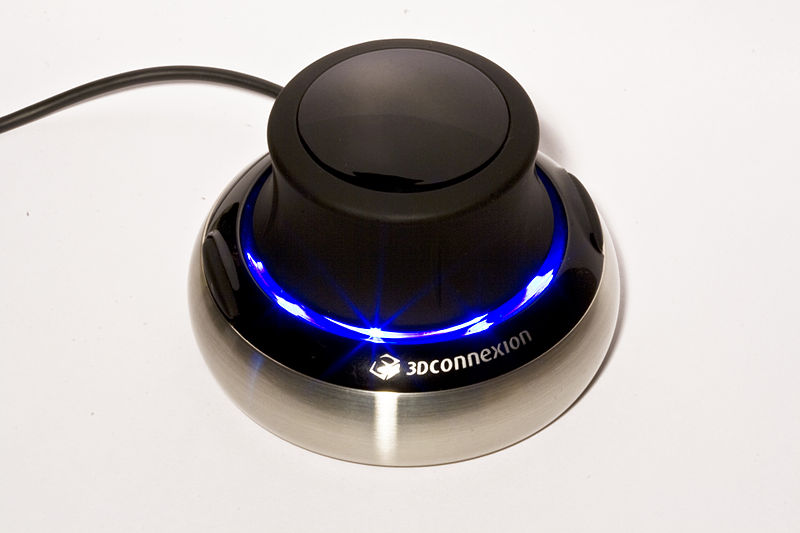

FreeCAD podporuje ovladače z projektu Spacenav. Cílem tohoto projektu je vytvořit open-source ovladač kompatibilní s proprietárními ovladači společnosti 3Dconnexion.
sudo apt-get install spacenavd
Mějte však na paměti, že verze 0.6 dostupná v Ubuntu 20.04 a pravděpodobně i ve starších verzích zřejmě nefunguje. V takovém případě je nutné zkompilovat spacenavd ze zdrojového kódu podle níže uvedeného postupu.
sudo yum install spacenavd
apt-get install spacenavd libspnav-dev
Spacenav vyžaduje následující oprávnění:
cp ~/.Xauthority /root/
Restart spnavd and FreeCAD
/usr/bin/spnavd_ctl x11 stop
/usr/bin/spnavd_ctl x11 start
sudo zypper install spacenavd
Tento postup se doporučuje, pokud vaše distribuce může poskytovat zastaralou verzi.
./configure
make
make install
./setup_init
/etc/init.d/spacenavd start
tail -n100 -f /var/log/spnavd.log
Device detection, parsing /proc/bus/input/devices
trying alternative detection, querying /dev/input/eventX device names...
trying "/dev/input/event1" ... Power Button
trying "/dev/input/event2" ... 3Dconnexion SpaceNavigator
using device: /dev/input/event2
device name: 3Dconnexion SpaceNavigator
./configure
make
fatal error: gtk/gtk.h: No such file or directory
sudo apt-get install libgtkmm-2.4-dev
make install
Chcete-li spouštět spacenavd při startu systému pomocí systemd, postupujte následovně:
Tento krok je nutný pouze při instalaci ze zdrojového kódu.
Pokud někdy SpaceNavigator přestane fungovat, je vhodné restartovat ovladač. Chcete-li jej restartovat, otevřete terminál a spusťte:
sudo xhost +
sudo /etc/init.d/spacenavd restart
Po tom restartujte FreeCAD. V některých distribucích je to nutné po každém bootu.
Jeden z uživatelů na fóru uvedl, že se mu zobrazil následující výstup:
Spacenav daemon 0.6 failed to open config file /etc/spnavrc: No such file or directory. using defaults. adding device. device name: 3Dconnexion SpacePilot using device: /dev/input/event5 No protocol specified failed to open X11 display ":0.0"
Fungovalo mu následující řešení:
sudo cp ~/.Xauthority /root/
sudo spnavd_ctl x11 start
sudo systemctl restart spacenavd
Jeden uživatel dokázal získat space navigator pracující pod OSX. Nicméně ještě to není dokonalé. Více informací na zde
Vstupní zařízení 3Dconnexion jsou v systému macOS podporována za předpokladu, že je FreeCAD sestaven a používán v systému s nainstalovanými ovladači 3Dconnexion. Pro macOS 12 Monterey může být vyžadována verze 3DxWare 10.7.2 nebo novější.
As of version 0.13, 3D mouse is supported under Windows. You need to have 3Dconnexion drivers installed. In FreeCAD version 1.0 a new integration with 3Dconnexion devices has been introduced. If compiled with that integration, only recent hardware is supported: to support older devices users will need to self-compile with the FREECAD_3DCONNEXION_SUPPORT cMake variable set to "Raw Input". Windows users should be aware that 3Dconnexion's driver (not the code in FreeCAD) contains a telemetry package that communicates information about your installed software back to 3Dconnexion.
Podpora 3D myši byla vytvořena v projektu spnav na Linuxu a na velmi nízké úrovni ve Windowsech. To znamená, že zde není žádná kvalitní podpora pro zařízení, protože na Linuxu ta podpora není moc dobrá a na Windows je přepsána. To je důvod proč byly do dialogového okna "Customize" přidány další dvě stránky.
1.0 and above: The 3Dconnexion manipulator can be set up in its driver app (3DxWare software).
0.21 and below: If a Spaceball is detected the following tabs in the Customize dialog can be used to change settings:
To je záložka kde máte možnost zadat některé ze základních nastavní prostorové myši. Ty zahrnují:
In this tab you have ability to set up some of general space mouse settings. They include:
Mimo to, pro každou osu můžete nastavit:
Když otevřete tuto záložku poprvé, bude prázdná a nepřístupná. Abyste ji aktivovali, musíte stisknout některé z tlačítek na prostorové myši. Až to uděláte, na levé straně se zobrazí seznam tlačítek a na pravé straně bude dostupný seznam příkazů.
When you open this tab for the first time, it will be empty and unavailable. To activate it, you must press one of your space mouse buttons. After you do, list of buttons will appear on the left side, and list of commands will be available on the right side.
Abyste přiřadili určitý příkaz k tlačítku, stiskněte tlačítko na levé straně a příslušný příkaz na pravé straně. Příkaz z tlačítka odstraníte stisknutím "Clear".
Check if your FreeCAD installation links to the spacenav library. The best way to check this is by running FreeCAD from the command line terminal FreeCAD --log-file /tmp/freecad.log and close it immediately again. Then open the file /tmp/freecad.log and search for the messages:
Connected to spacenav daemon
or
Couldn't connect to spacenav daemon. Please ignore if you don't have a spacemouse.
If none of them appears then your FreeCAD build doesn't link to the spacenav library. If the former message appears then it basically works. The latter message means there is probably a problem with the spacenav daemon.
{kind=link}
{kind=link}
{kind=link}